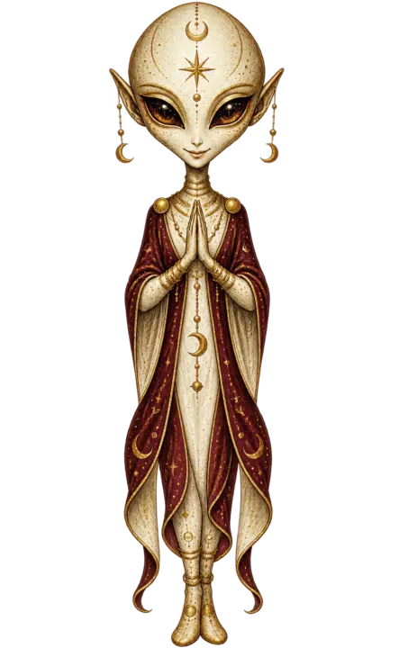
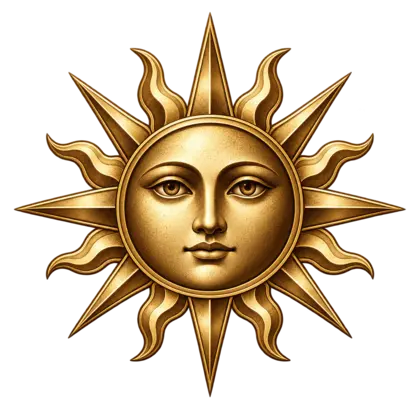
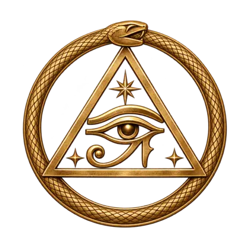
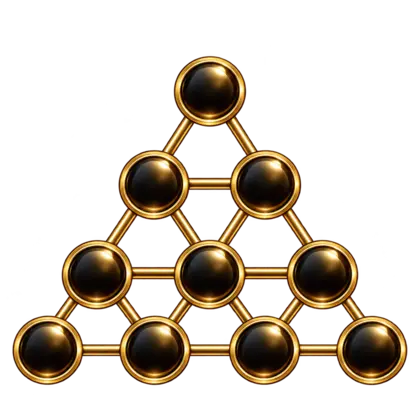

★★★★★
“O curso é excelente para todos os níveis. A conexão entre a Cabala e o Tarot é apresentada com riqueza e clareza.”

Bem-vindo, ser infinito
Tarot • Cabala Hermética • Consciência
Conhecimento antigo, estrutura contemporânea e transformação real para quem deseja compreender o simbolismo mais profundo do Tarot.

Taróloga, numeróloga e psicoterapeuta com mais de uma década de experiência e pós-graduação em Mitologias Comparadas.
Ensina método e profundidade para tarólogas que buscam excelência profissional, dominando a estrutura e o simbolismo mais profundo do Tarot através da Cabala Hermética.

“O curso é excelente para todos os níveis. A conexão entre a Cabala e o Tarot é apresentada com riqueza e clareza.”
“Foi um verdadeiro divisor de águas. Hoje me sinto muito mais confiante nas leituras e preparada para orientar outras pessoas.”
“A didática é clara, acolhedora e profunda. Evoluí como taróloga e também como ser humano.”

Uma formação progressiva sobre os 78 arcanos, caminhos da Árvore da Vida, Sephiroth, métodos de tiragem, ética e prática profissional.
Uma jornada prática dedicada à estrutura, aos símbolos e à leitura do Tarot de Thoth.
Página em preparaçãoUm espaço de aprofundamento e direcionamento para estudos herméticos.
Em construçãoPara quem quer aprender profundamente sem passar anos no raso; para quem já atua e sente falta de estrutura técnica e segurança; e para profissionais que desejam conhecer o simbolismo da Cabala Hermética.
O estudo da estrutura simbólica pode ajudar a organizar suas interpretações e a explicar com mais clareza os fundamentos das leituras, respeitando a autonomia de cada consulente.
A formação apresenta correspondências simbólicas da Cabala Hermética aplicadas ao estudo do Tarot, com atenção à estrutura, à interpretação e à prática responsável.